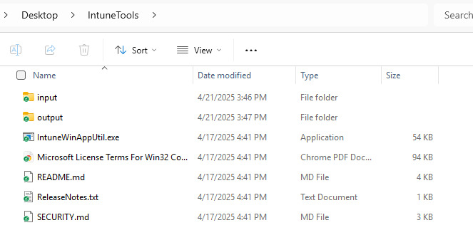
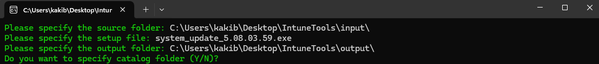
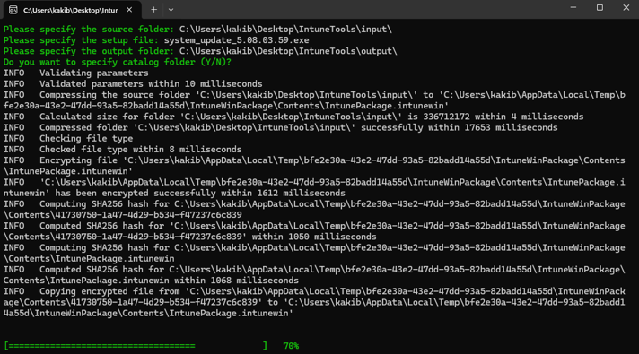
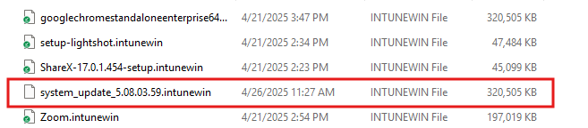
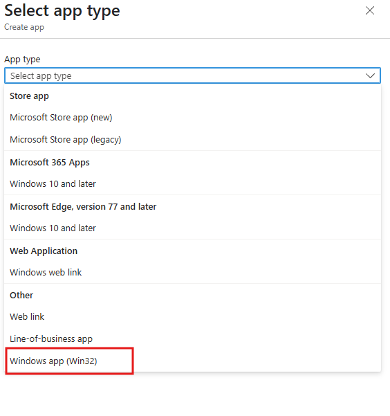
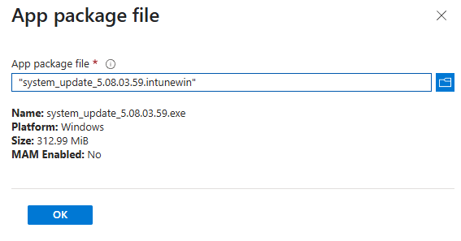
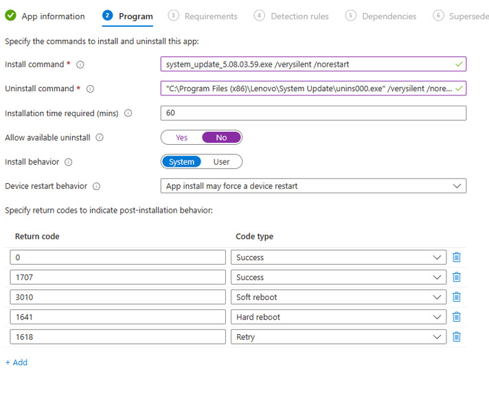
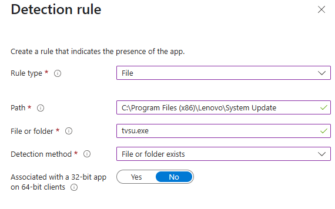

Most of the 26+ apps I've deployed through Intune were packaged this way. The example below uses the Lenovo System Update installer, but the process is the same for any EXE or MSI.
Prerequisites
- Create a working folder, for example
C:\IntuneTools. - Download
IntuneWinAppUtil.exefrom Microsoft's GitHub repository: Microsoft-Win32-Content-Prep-Tool, and extract it into the folder. - Create
C:\IntuneTools\input\for the installer files andC:\IntuneTools\output\for the finished package.
The IntuneTools folder
Step 1: Build the .intunewin package
- Double-click
IntuneWinAppUtil.exeand answer the prompts:- Source folder:
C:\IntuneTools\input\ - Setup file:
system_update_5.08.03.59.exe - Output folder:
C:\IntuneTools\output\(keep it separate from the source) - Catalog folder: press N or just Enter. Catalog files are only needed for some signing scenarios.

Content Prep Tool prompts - Source folder:
- The tool compresses, encrypts and hashes the content and writes the
.intunewinfile.
Building the package 
The finished .intunewin files
Step 2: Create the app in Intune
- Sign in to the Microsoft Intune admin center and go to Apps → Windows → + Add. Under App type choose Windows app (Win32).

Windows app (Win32) - Select the package you just built.

Upload the .intunewin - Fill in Name, Description and Publisher, then click Next.
- Find the app's silent switches. For Lenovo System Update they are
/verysilent /norestart:- Install command:
system_update_5.08.03.59.exe /verysilent /norestart. The file name must match the one you packaged exactly. - Uninstall command:
"C:\Program Files (x86)\Lenovo\System Update\unins000.exe" /verysilent /norestart - Set Allow available uninstall to No if users shouldn't remove it.

Program settings - Install command:
- Set the requirements (minimum OS, architecture) and click Next.
- Detection rules: choose Manually configure detection rules → Add → Rule type: File. Set Path to the install folder, File or folder to the app's EXE, and the detection method to File or folder exists.

File-based detection rule - Click through to Assignments:
- Required: installs automatically in the background.
- Available for enrolled devices: users can install it from Company Portal.
- Review and click Create. Wait for the upload to finish.